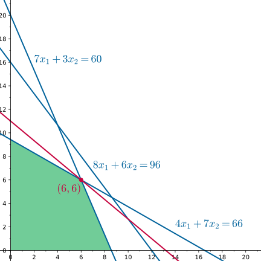
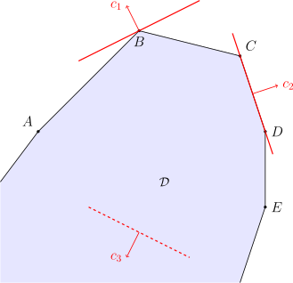

OI Wiki · prijevod · MatematikaOI Wiki · translation · Mathematics
Osnove linearnog programiranjaLinear programming basics
Sadržaj
Uvod
Linearno programiranje (linear programming, LP) zajednički je naziv za metode proučavanja problema ekstrema linearne ciljne funkcije uz linearna ograničenja; grana je operacijskih istraživanja i ima primjene u mnogim područjima. Neki posebni slučajevi linearnog programiranja, poput problema mrežnog toka i višerobnog toka (multi-commodity flow), mogu se pojaviti u zadacima na algoritamskim natjecanjima. Na algoritamskim natjecanjima rijetko se pojavljuju zadaci koji se mogu riješiti samo algoritmima linearnog programiranja; velika većina takvih zadataka može se učinkovitije riješiti modeliranjem mrežnim tokom i sličnim metodama.
Jednostavan primjer
Da bi se problem mogao zapisati u obliku linearnog programa, mora imati i nekoliko linearnih ograničenja i linearnu ciljnu funkciju.
Razmotrimo sljedeći primjer:
Primjer
Majstor u pekarnici svaki dan može napraviti određenu količinu baozija (punjenih peciva na pari) i youtiaoa (prženih štapića od tijesta); oba su doručka vrlo omiljena među kupcima. Kako bi maksimizirao dobit, majstor želi napraviti što više doručaka, ali je u praksi ograničen raznim resursima poput sastojaka i vremena. Zato je popisao količinu sastojaka, vrijeme izrade i pripadnu dobit po porciji svakog doručka, kako prikazuje sljedeća tablica:
| Doručak | Biljno ulje | Brašno | Vrijeme | Dobit |
|---|---|---|---|---|
| Baozi | \(4\) | \(7\) | \(8\) | \(5\) |
| Youtiao | \(7\) | \(3\) | \(6\) | \(6\) |
Pretpostavimo da majstor dnevno može nabaviti najviše \(66\) jedinica biljnog ulja i \(60\) jedinica brašna te uložiti najviše \(96\) jedinica vremena izrade. Kako majstor treba rasporediti proizvodnju baozija i youtiaoa da bi dnevna dobit bila najveća?
Opišimo to matematičkim jezikom: neka su \(x_1\) i \(x_2\) redom količine baozija i youtiaoa koje majstor napravi. Tada se uvjet „ukupno potrebno biljno ulje ne premašuje \(66\) jedinica” može zapisati kao
Slično, uvjeti „ukupno potrebno brašno ne premašuje \(60\) jedinica” i „ukupno potrebno vrijeme ne premašuje \(96\) jedinica” zapisuju se kao
Osim toga, majstor ne može proizvesti negativan broj doručaka, pa vrijedi i uvjet
Majstor, dakle, uz ta ograničenja treba maksimizirati dobit:
To je tipičan problem linearnog programiranja. Njegova je ciljna funkcija linearna funkcija varijabli odlučivanja, a ograničenja čine linearne jednadžbe ili nejednadžbe u varijablama odlučivanja.
Grafička metoda
Problemi linearnog programiranja sa samo dvije varijable odlučivanja mogu se zorno riješiti grafičkom metodom.
Promotrimo geometrijsku sliku koja odgovara problemu iz ovog odjeljka
Zadnji redak ograničenja znači da se sve dopustive točke \((x_1,x_2)\) nalaze u prvom kvadrantu, a ostala tri ograničenja znače da dopustive točke moraju ležati ispod pravaca \(4x_1 + 7x_2 = 66\), \(7x_1 + 3x_2 = 60\) i \(8x_1 + 6x_2 = 96\). Presjek tih područja (zeleno područje na slici dolje) skup je svih točaka koje dolaze u obzir:

Zatim treba maksimizirati vrijednost \(z=5x_1+6x_2\). Shvatimo li tu jednakost kao jednadžbu pravca \(5x_1+6x_2=z\), onda s promjenom \(z\) dobivamo familiju paralelnih pravaca, i što je \(z\) veći, pravac je bliže gornjem desnom kutu. Stoga je dovoljno pomicati pravac sve dok ne dosegne kritični položaj u kojem bi se, pomaknemo li ga još malo gore-desno, prestao sjeći s prikazanim područjem; vrijednost \(z\) koja odgovara tom pravcu upravo je tražena najveća vrijednost.
Kao što slika pokazuje, to se događa u položaju označenom crvenom točkom. To je sjecište pravaca \(4x_1 + 7x_2 = 66\) i \(7x_1 + 3x_2 = 60\). Rješavanjem sustava jednadžbi tih dvaju pravaca dobivamo da su njegove koordinate \((6,6)\). To je jedino optimalno rješenje ovog problema. Najveća dobit majstora iznosi \(z=66\).
Kad problem ima više od dvije varijable odlučivanja, grafička metoda više nije primjenjiva. Međutim, neka zapažanja iz primjera u ovom odjeljku i dalje vrijede. Svako ograničenje u obliku nejednakosti u problemu linearnog programiranja opisuje jednu „poluravninu”, a skup svih dopustivih rješenja presjek je tih „poluravnina”, pa je uvijek „konveksan poligon”. Optimalno rješenje problema uvijek se može postići u nekom „vrhu” tog „konveksnog poligona”. Koordinate tih „vrhova” mogu se dobiti rješavanjem sustava jednadžbi „rubova” tih „poluravnina”. Proširenjem tih zapažanja na višedimenzionalne prostore razvijena je učinkovita metoda za rješavanje problema linearnog programiranja – simpleks metoda. To je ujedno metoda koja se najčešće primjenjuje na algoritamskim natjecanjima.
Još jedan problem vrijedan pažnje jest to da baoziji i youtiaoi koje majstor pravi načelno nisu beskonačno djeljivi, nego bi njihov broj trebao biti cijeli. Iako to pri rješavanju ovog zadatka nismo izričito zahtijevali, konačno optimalno rješenje doista je cjelobrojno, pa odgovor ostaje dopustiv čak i ako dodamo cjelobrojno ograničenje. No za mnoge probleme optimizacije optimalno se rješenje možda ne može postići u cjelobrojnoj točki; takvi su problemi zapravo problemi cjelobrojnog programiranja, a ne obični problemi linearnog programiranja. Ta je vrsta problema kratko razmotrena na kraju ovog članka.
Osnovni pojmovi
U ovom se odjeljku uvode osnovni pojmovi problema linearnog programiranja.
Problem linearnog programiranja
Problem linearnog programiranja \(P\) obično se sastoji od sljedeća dva dijela:
-
linearne ciljne funkcije, tj. funkcije oblika
\[ f(x_1,x_2,\cdots,x_n)=c_1x_1+c_2x_2+\cdots+c_nx_n \]gdje su \(c_i\in\mathbf R\) konstante;
-
linearnih ograničenja, tj. ograničenja u obliku nejednakosti ili jednakosti
\[ g_j(x_1,x_2,\cdots,x_n)=a_{j1}x_1+a_{j2}x_2+\cdots+a_{jn}x_n \le (=,\ge) b_j \]gdje su \(a_{ji},b_j\in\mathbf R\) konstante.
Problem linearnog programiranja sastoji se u tome da se uz zadovoljavanje zadanih ograničenja maksimizira ili minimizira ciljna funkcija. Rješenje \((x_1,x_2,\cdots,x_n)\in\mathbf R^n\) koje zadovoljava zadana ograničenja naziva se dopustivo rješenje (feasible solution); ono dopustivo rješenje pri kojem ciljna funkcija postiže ekstrem naziva se optimalno rješenje (optimal solution).
Standardni oblik
Radi lakšeg opisa i daljnje obrade obično se propisuje standardni oblik problema linearnog programiranja. Različita literatura može ga propisivati različito; u ovom članku standardni oblik linearnog programa definiramo ovako:
Drugim riječima, problem linearnog programiranja problem je minimizacije, sve varijable odlučivanja imaju ograničenje nenegativnosti, a osim toga sadrži samo niz ograničenja u obliku jednakosti s nenegativnom konstantom na desnoj strani. Pomoću matrica taj se problem može zapisati sažetije:
Ovdje je \(x=(x_i)\in\mathbf R^n\) vektor varijabli odlučivanja, a \(b=(b_j)\in\mathbf R^m\) i \(A=(a_{ji})\in\mathbf R^{m\times n}\) konstante koje se pojavljuju u ograničenjima. Veličina problema linearnog programiranja odnosi se na broj njegovih varijabli odlučivanja i broj njegovih ograničenja.
Vektorske nejednakosti
U ovom će se članku više puta pojavljivati vektorske nejednakosti poput \(b \ge 0\). Općenito, za vektore \(x,y\in\mathbf R^n\) nejednakost \(x\le y\) znači \(\forall i(x_i\le y_i)\), tj. usporedbu realnih brojeva po koordinatama. Ta je relacija parcijalni uređaj na vektorskom prostoru, što znači da postoje parovi vektora koji se ne mogu usporediti.
Odabir standardnog oblika služi samo lakšem izlaganju i nije ni po čemu poseban, jer se svaki problem linearnog programiranja može ekvivalentno zapisati u svakom od sljedećih šest oblika:
Sljedećim se operacijama svaki problem linearnog programiranja može ekvivalentno pretvoriti u bilo koji od tih šest oblika:
- Dodavanjem predznaka minus, tj. zamjenom \(c\) s \(-c\), problem maksimizacije pretvara se u problem minimizacije i obrnuto.
- Dodavanjem predznaka minus, tj. zamjenom \(a_j^Tx \lesseqqgtr b_j\) s \(-a_j^Tx \gtreqqless -b_j\), mijenja se smjer nejednakosti u ograničenju, odnosno konstanta na desnoj strani ograničenja u obliku jednakosti postaje nenegativna.
- Svako ograničenje u obliku jednakosti \(a_j^Tx = b_j\) može se zamijeniti dvama ograničenjima u obliku nejednakosti suprotnih smjerova, \(a_j^Tx \ge b_j\) i \(a_j^Tx \le b_j\).
- Svako ograničenje u obliku nejednakosti \(a_j^Tx \le(\ge) b_j\) može se dodavanjem nenegativne dopunske varijable \(s_j\) pretvoriti u ograničenje u obliku jednakosti \(a_j^Tx +(-) s_j = b_j\) zajedno s pripadnim ograničenjem nenegativnosti \(s_j\ge 0\).
- Ako neka varijabla odlučivanja \(x_i\) nema ograničenje nenegativnosti, može se zamijeniti razlikom dviju nenegativnih varijabli, tj. \(x_i = x^+_i - x^-_i\) uz \(x^+_i,x^-_i \ge 0\).
Veličina problema linearnog programiranja dobivenog tim operacijama ne premašuje dvostruku veličinu izvornog problema, a dopustiva i optimalna rješenja tih problema lako se preslikavaju jedna u druga. Stoga se problem linearnog programiranja u općem obliku uvijek može najprije pretvoriti u standardni oblik (ili u jedan od navedenih šest oblika) pa tek onda rješavati.
Primjer
Promotrimo problem linearnog programiranja
Operacijama 1, 2 i 3 može se pretvoriti u oblik \(\min\{c^Tx : Ax \ge b\}\), tj.
Operacijama 4 i 5 može se pretvoriti u oblik \(\max\{c^Tx : Ax = b,~ x\ge 0\}\), tj.
Dopustivo područje i rješenja problema
Skup svih dopustivih rješenja \(\mathcal D\subseteq\mathbf R^n\) naziva se dopustivo područje (feasible region) problema linearnog programiranja \(P\). Geometrijski gledano, svako ograničenje u obliku nejednakosti \(a_j^T x \le b_j\) opisuje poluprostor \(\{x\in\mathbf R^n:a_j^T x \le b_j\}\), a svako ograničenje u obliku jednakosti \(a^T_jx = b_j\) opisuje hiperravninu \(\{x\in\mathbf R^n:a_j^Tx=b_j\}\), pa je dopustivo područje nužno presjek konačno mnogo poluprostora i hiperravnina. U području optimizacije1 takvo se geometrijsko tijelo obično naziva poliedar (polyhedron) u \(\mathbf R^n\). Poliedar je uvijek zatvoren konveksan skup, ali ne mora biti omeđen. Omeđeni poliedar naziva se i politop (polytope). Politop se može shvatiti kao poopćenje poligona u ravnini na prostore više dimenzije, a poliedar ga dalje poopćuje na moguće neomeđen slučaj.
Primjeri poliedara
Navodimo neke uobičajene poliedre:
- Prazan skup \(\varnothing\), koji se naziva i nulitop (nullitope); njegova se dimenzija po dogovoru definira kao \(-1\).
- Afini potprostor (affine subspace), tj. presjek nekoliko hiperravnina \(\{x\in\mathbf R^n:Ax = b\}\). On odgovara skupu rješenja sustava linearnih jednadžbi \(Ax = b\): kad sustav nema rješenja, to je prazan skup; inače se uvijek može zapisati u obliku \(x_0+V\), gdje je \(x_0\in\mathbf R^n\), a \(V\subseteq\mathbf R^n\) linearni potprostor dimenzije \(n-\operatorname{rank}A\). Posebno, i hiperravnine su afini potprostori.
- Poliedarski konus (polyhedral cone), tj. skup svih nenegativnih linearnih kombinacija \(\{\sum_i\alpha_ix_i:\alpha_i\ge 0\}\) konačno mnogo točaka \(\{x_i\}\) u prostoru. To je konveksan konus s vrhom u ishodištu. Ekvivalentno, može se shvatiti kao poliedar omeđen nekoliko hiperravnina koje prolaze ishodištem, tj. \(\{x\in\mathbf R^n : Ax\le 0\}\). Posebno, i poluprostori su poliedarski konusi.
- Politop, tj. omeđen poliedar. Posebno, politopi dimenzije \(-1\), \(0\), \(1\), \(2\) i \(3\) redom su poznati prazan skup, točka, dužina, poligon i poliedar (u uobičajenom smislu). Skup je politop ako i samo ako je konveksna ljuska \(\{\sum_i\alpha_ix_i:\alpha_i\ge 0,~\sum_i\alpha_i=1\}\) konačno mnogo točaka \(\{x_i\}\). Politop dimenzije \(k\) konveksna je ljuska razapeta s najmanje \(k+1\) točaka.
- Simpleks (simplex), tj. politop dimenzije \(k\) razapet s točno \(k+1\) točaka. To je najjednostavniji politop dimenzije \(k\). Posebno, simpleksi dimenzije \(-1\), \(0\), \(1\), \(2\) i \(3\) redom su prazan skup, točka, dužina, trokut i tetraedar. Najjednostavniji primjer simpleksa dimenzije \(k\) jest \(\{x\in\mathbf R^{k+1}:x_i\ge 0,~\sum_ix_i=1\}\). Zapravo se svaki simpleks dimenzije \(k\) afinom transformacijom (tj. translacijom i skaliranjem) može prevesti u taj posebni slučaj. Vrijedi napomenuti da se simpleks metoda zapravo ne izvodi na simpleksu.
Svaki se poliedar može shvatiti kao suma Minkowskog jednog poliedarskog konusa i jednog politopa: prvi opisuje neomeđeni dio poliedra, a drugi oblik njegova omeđenog dijela. Taj je poliedarski konus jedinstven: poliedarski konus dobiven rastavom poliedra \(\{x\in\mathbf R^n:Ax\le b\}\) nužno je \(\{x\in\mathbf R^n:Ax\le 0\}\).
Rješenja linearnog programa usko su povezana sa strukturom poliedra. Za poliedar \(\mathcal D\subseteq\mathbf R^n\) i vektor \(c\in\mathbf R^n\setminus\{0\}\) promotrimo sljedeći problem linearnog programiranja \(P\) (slučaj minimizacije razmatra se analogno):
Geometrijski gledano, to znači pomicati hiperravninu \(H:c^Tx = z\) u smjeru vektora \(c\) tako da \(z\) bude što veći, uz uvjet da hiperravnina \(H\) i dopustivo područje \(\mathcal{D}\) imaju barem jednu zajedničku točku. Postoje tri mogućnosti:
-
Dopustivo područje \(\mathcal D\) prazan je skup. To znači da problem \(P\) nema dopustivog rješenja, tj. neka su njegova ograničenja međusobno proturječna. Tada kažemo da je problem \(P\) nedopustiv (infeasible), a njegova optimalna vrijednost po dogovoru iznosi \(-\infty\).
-
Dopustivo područje \(\mathcal D\) neprazno je, ali sadrži zraku sa smjerom \(d\) za koji je \(c^Td>0\), tj. postoji \(x_0\in\mathbf R^n\) takav da \(x_0+td\in\mathcal D\) vrijedi za sve \(t\ge 0\). Budući da se hiperravnina \(H\) može neograničeno pomicati u smjeru vektora \(c\), a pritom skup \(H\cap\mathcal D\) sadrži barem jednu točku te zrake pa je sigurno neprazan, ciljna funkcija \(c^Tx = c^Tx_0 + tc^Td\) može poprimiti proizvoljno velike vrijednosti. Tada kažemo da je problem \(P\) neomeđen (unbounded), a njegova optimalna vrijednost po dogovoru iznosi \(+\infty\).
-
Dopustivo područje \(\mathcal D\) neprazno je i ne sadrži nijednu takvu zraku. Tada kažemo da je problem \(P\) omeđen (bounded). Označimo sa \(z^*\in\mathbf R\) optimalnu vrijednost problema \(P\). Hiperravnina \(H^*:c^Tx = z^*\) nalazi se u kritičnom položaju: siječe poliedar \(\mathcal D\), a \(\mathcal D\) je sadržan u poluprostoru \(\{x:c^Tx\le z^*\}\). Takva se hiperravnina naziva potporna hiperravnina (supporting hyperplane) poliedra \(\mathcal D\). Skup optimalnih rješenja problema \(P\) upravo je \(H^*\cap\mathcal D\). Kao presjek potporne hiperravnine i poliedra, skup \(H^*\cap\mathcal D\) nužno je poliedar i sadržan je u rubu poliedra \(\mathcal D\). Naziva se strana (face) poliedra \(\mathcal D\). Slikovito rečeno, poliedar je omeđen tim stranama. Osim tih strana, nastalih kao presjek potporne hiperravnine i poliedra, poliedar općenito ima još dvije strane: prazan skup i sam poliedar. Sve strane poliedra s obzirom na relaciju inkluzije skupova tvore strukturu rešetke.
Dimenzija strane poliedra dimenzije \(d\) nužno je cijeli broj između \(-1\) i \(d\). Strana dimenzije \(0\) (tj. točka) naziva se vrh (vertex) ili kutna točka (corner point) poliedra \(\mathcal D\), strana dimenzije \(1\) naziva se brid (edge) poliedra \(\mathcal D\), a strana dimenzije \(d-1\) naziva se faceta (facet) poliedra \(\mathcal D\). Međutim, nemaju svi poliedri vrhove. Budući da je strana strane poliedra i sama strana tog poliedra, a jedino afini potprostori nemaju strogo manjih nepraznih strana, sve minimalne strane poliedra \(\mathcal D\) afini su potprostori. Štoviše, minimalne strane istog poliedra imaju jednaku dimenziju; posebno, dimenzija minimalnih strana poliedra \(\mathcal D=\{x\in\mathbf R^n:Ax\le b\}\) iznosi \(n-\operatorname{rank}A\).
Budući da su strane poliedra upravo skupovi rješenja omeđenih problema linearnog programiranja, treba razjasniti kako odrediti jednadžbe strana poliedra. Neka je poliedar \(\mathcal D\) opisan nizom ograničenja \(a_j^Tx \lesseqqgtr b_j\) i neka je \(F\) jedna strana od \(\mathcal D\). Ako neko ograničenje u svim točkama \(x\in F\) vrijedi s jednakošću, kažemo da je to ograničenje aktivno (tight) na strani \(F\). Točke strane \(F\) očito zadovoljavaju sustav jednadžbi dobiven izjednačavanjem tih aktivnih ograničenja, a presjek afinog potprostora određenog tim sustavom i poliedra \(\mathcal D\) upravo je strana \(F\). Obrnuto, odaberemo li bilo koji podskup ograničenja poliedra \(\mathcal D\), ta ograničenja pretvorimo u jednakosti i riješimo dobiveni sustav, presjek dobivenog afinog potprostora i poliedra jedna je strana od \(\mathcal D\). Štoviše, što više aktivnih ograničenja odaberemo, to je dobivena strana (u smislu inkluzije) manja.
Posebno, matrica koeficijenata \(\begin{pmatrix}A\\ I\end{pmatrix}\) dopustivog područja \(\mathcal D=\{x\in\mathbf R^n:Ax=b,~x\ge 0\}\) linearnog programa u standardnom obliku ima rang \(n\), pa su njegove minimalne strane upravo njegovi vrhovi. Drugim riječima, ako je problem omeđen, njegovo se optimalno rješenje uvijek može odabrati u nekom vrhu. Štoviše, taj se vrh može dobiti odabirom \(n\) linearno nezavisnih aktivnih ograničenja i rješavanjem pripadnog sustava. Upravo je to prednost standardnog oblika linearnog programa.
Primjer
Na slici dolje \(\mathcal D\) je dopustivo područje. Kad su koeficijenti ciljne funkcije \(c_1,c_2,c_3\), dobivamo redom tri slučaja: jedinstveno optimalno rješenje, više optimalnih rješenja i neomeđen problem. U prvim dvama slučajevima odgovarajući debeli crveni puni pravac (jedna je od) potpornih hiperravnina koje odgovaraju skupu rješenja, a skupovi optimalnih rješenja redom su vrh \(B\) i brid \(\overline{CD}\) poliedra \(\mathcal D\). U trećem slučaju dopustivo područje \(\mathcal D\) sadrži zraku smjera \(c_3\), pa se hiperravnina s normalom \(c_3\) može neograničeno pomicati u smjeru \(c_3\), te je problem neomeđen.

U ovim je razmatranjima izostavljen slučaj \(c=0\). Tada problem linearnog programiranja očito ne može biti neomeđen, pa je ili sam problem nedopustiv ili je optimalna vrijednost jednaka \(0\), a skup optimalnih rješenja upravo je \(\mathcal D\). Takvi se posebni linearni programi nazivaju i linearnim programima dopustivosti (feasibility linear programming).
Vrijedi istaknuti da su problemi poput odlučivanja je li problem linearnog programiranja dopustiv ili omeđen te nalaženja dopustivog rješenja sustava nejednadžbi jednako teški kao i samo rješavanje problema linearnog programiranja2. Primjerice, dokaz teorema o jakoj dualnosti u nastavku pokazuje da je rješavanje omeđenog problema linearnog programiranja ekvivalentno nalaženju dopustivog rješenja skupa nejednadžbi. Stoga je za zadatke poput odlučivanja ima li sustav nejednadžbi rješenje ili ima li sustav jednadžbi nenegativno rješenje najučinkovitiji način rješavanje pripadnog linearnog programa dopustivosti3.
Osim toga, ako neko ograničenje problema linearnog programiranja nije aktivno ni na jednoj strani dopustivog područja, to je ograničenje redundantno (redundant). U primjeru s pekarskim majstorom s početka ovog članka ograničenje radnog vremena redundantno je ograničenje. Problem odlučivanja je li u zadanom sustavu nejednadžbi neka nejednadžba \(a_j^Tx\le b_j\) redundantna može se riješiti rješavanjem problema linearnog programiranja \(\max\{a_j^Tx:x\in\mathcal D\}\) i usporedbom rezultata s \(b_j\).
Uobičajeni algoritmi
Na algoritamskim natjecanjima rijetko se pojavljuju problemi koji se mogu riješiti samo algoritmima linearnog programiranja. Većina zadataka koji se mogu riješiti metodama linearnog programiranja obično se može riješiti i specijaliziranijim i učinkovitijim algoritmima poput mrežnog toka.
Uobičajeni algoritmi za rješavanje problema linearnog programiranja jesu:
- simpleks metoda
- metoda elipsoida
- metode unutarnje točke
Iako je složenost simpleks metode u najgorem slučaju eksponencijalna, a složenost metoda unutarnje točke polinomna, obje vrste algoritama izvrsno se ponašaju na većini praktičnih problema. Nasuprot tome, metoda elipsoida, iako joj je teorijska složenost polinomna, obično je spora i nije praktična.
Još nije poznato postoji li za probleme linearnog programiranja algoritam jako polinomne složenosti.
Dualni problem
Svakom problemu linearnog programiranja odgovara dualni problem. Rješenja primarnog (izvornog) i dualnog problema usko su povezana. Dualni problem ne samo da pomaže dubljem razumijevanju strukture problema nego često može i povećati učinkovitost rješavanja primarnog problema.
Za problem linearnog programiranja \(P\) (sve varijable označene malim slovima su vektori)
njegov dualni problem \(D\) jest problem linearnog programiranja
Pritom su varijable odlučivanja dualnog problema \(y_1,y_2,y_3\) redom Lagrangeovi multiplikatori triju vrsta ograničenja primarnog problema; obrnuto, varijable odlučivanja primarnog problema \(x_1,x_2,x_3\) redom su Lagrangeovi multiplikatori triju vrsta ograničenja dualnog problema. Lako se provjeri da je dualni problem dualnog problema upravo primarni problem.
Odnos između primarnog problema \(P\) i dualnog problema \(D\) je sljedeći:
| Problem minimizacije | Problem maksimizacije |
|---|---|
| ograničenje „veće ili jednako” | nenegativna varijabla |
| ograničenje „manje ili jednako” | nepozitivna varijabla |
| ograničenje u obliku jednakosti | slobodna varijabla |
| nenegativna varijabla | ograničenje „manje ili jednako” |
| nepozitivna varijabla | ograničenje „veće ili jednako” |
| slobodna varijabla | ograničenje u obliku jednakosti |
| koeficijenti ciljne funkcije | konstante na desnoj strani ograničenja |
| konstante na desnoj strani ograničenja | koeficijenti ciljne funkcije |
Posebno, dualni problem linearnog programa u standardnom obliku
jest
Princip dualnosti
Primarni i dualni problem nisu samo formalno zrcalne slike jedan drugoga, nego su im i rješenja usko povezana. To se naziva princip dualnosti (duality principle). Radi jednostavnosti izlaganja, pri iskazivanju i dokazivanju teorema u ovom odjeljku primarni problem uzimamo u standardnom obliku.
Najprije, teorem o slaboj dualnosti (weak duality theorem) kaže da maksimum dualnog problema ne premašuje minimum primarnog problema.
Teorem o slaboj dualnosti
Za sve \(A\in\mathbf R^{m\times n}\), \(b\in\mathbf R^m\) i \(c\in\mathbf R^n\) uvijek vrijedi
Dokaz
Ako je bilo koji od primarnog i dualnog problema nedopustiv, nejednakost je trivijalna. Pretpostavimo da su oba problema dopustiva. Tada za sve dopustive \(x\) i \(y\) vrijedi
Uzimanjem ekstrema na objema stranama dobivamo da vrijedi teorem o slaboj dualnosti.
Za daljnje razmatranje odnosa između rješenja primarnog i dualnog problema potrebna je još Farkasova lema (i njezine razne inačice). Ona daje nužan i dovoljan uvjet da sustav linearnih jednadžbi ima nenegativno rješenje.
Farkasova lema
Za \(A\in\mathbf R^{m\times n}\) i \(b\in\mathbf R^m\) vrijedi točno jedna od sljedećih dviju tvrdnji:
- postoji \(x\in\mathbf R^n\) takav da je \(Ax=b\) i \(x\ge 0\);
- postoji \(y\in\mathbf R^m\) takav da je \(A^T y\ge 0\) i \(b^Ty<0\).
Dokaz
Kad bi obje tvrdnje vrijedile istodobno, imali bismo \(0\le (A^Ty)^Tx = y^T(Ax) = b^Ty<0\), što je kontradikcija. Dakle, vrijedi najviše jedna od tvrdnji. Pokažimo sada da vrijedi barem jedna. Označimo s \(C=\{Ax:x\ge 0\}\) poliedarski konus razapet stupcima matrice \(A\). Ako je \(b\in C\), vrijedi tvrdnja 1; inače treba pokazati da vrijedi tvrdnja 2. Budući da se poliedarski konus \(C\) može zapisati i kao presjek konačno mnogo poluprostora koji prolaze ishodištem, on je zatvoren konveksan skup. Kako je \(b\notin C\), prema teoremu o separaciji hiperravninom postoje \(y\in\mathbf R^m\) i \(\alpha\in\mathbf R\) takvi da je \(b^Ty<\alpha\) i \(z^Ty>\alpha\) za sve \(z\in C\). Budući da je \(0\in C\), vrijedi \(\alpha<0\), pa je \(b^Ty<0\). Nadalje, budući da za sve \(x\ge 0\) i \(t>0\) vrijedi \(t(A^Ty)^Tx>\alpha\), puštajući \(t\to+\infty\) dobivamo da \((A^Ty)^Tx\ge 0\) vrijedi za sve \(x\ge 0\), tj. \(A^Ty\ge 0\). To je upravo tvrdnja 2.
Geometrijski gledano, tvrdnja 1 kaže da točka \(b\) leži u poliedarskom konusu \(C\) razapetom stupcima matrice \(A\); tvrdnja 2 kaže da postoji hiperravnina \(H:y^Tx = 0\) koja prolazi ishodištem i ima normalu \(y\), a strogo razdvaja točku \(b\) od poliedarskog konusa \(C\). Farkasova lema stoga je svojevrsni teorem o separaciji hiperravninom.
Pomoću Farkasove leme dobiva se način da se na temelju dopustivosti primarnog i dualnog problema odluči je li primarni problem neomeđen.
Korolar
Problem linearnog programiranja neomeđen je ako i samo ako je dopustiv, a njegov je dualni problem nedopustiv.
Dokaz
I dalje za primjer uzimamo primarni problem u standardnom obliku. Problem linearnog programiranja u općem obliku dovoljno je najprije pretvoriti u standardni oblik, jer pretvorbe opisane ranije ne mijenjaju dopustivost ni omeđenost problema i njegova dualnog problema.
S jedne strane, ako je primarni problem neomeđen, očito je dopustiv, a optimalna mu je vrijednost \(-\infty\). Tada dualni problem nužno nije dopustiv, jer bi inače njegova optimalna vrijednost bila ne manja od nekog realnog broja, što proturječi teoremu o slaboj dualnosti.
S druge strane, neka je primarni problem dopustiv, a dualni nedopustiv. Zapišemo li slobodnu varijablu u ograničenju \(A^Ty\le c\) kao razliku dviju nenegativnih varijabli \(y=y^+-y^-\) i dodamo nenegativnu dopunsku varijablu \(s\), ono postaje ekvivalentno ograničenju \(Mz=c\) uz \(z\ge 0\), gdje je \(M=(A^T,-A^T,I)\) i \(z=(y^+,y^-,s)\). Budući da je \(M^Td=(Ad,-Ad,d)\), primjena Farkasove leme na \(M\) i \(c\) pokazuje da ili postoji \(y\) takav da je \(A^Ty\le c\), ili postoji \(d\ge 0\) takav da je \(Ad=0\) i \(c^Td<0\), i to točno jedno od toga. Prema pretpostavci vrijedi potonje. Uzmemo li tada bilo koje dopustivo rješenje \(x_0\) primarnog problema, vrijedi \(A(x_0+td)=b\) i \(x_0+td\ge 0\) za sve \(t\ge 0\), dok \(c^T(x_0+td)=c^Tx_0+tc^Td\to-\infty~(t\to+\infty)\). To pokazuje da je primarni problem neomeđen.
Kombiniranjem teorema o slaboj dualnosti i ovog korolara, za rješenja primarnog i dualnog problema moguća su samo sljedeća četiri slučaja:
- primarni i dualni problem oba su nedopustiva, tj. \(-\infty\le+\infty\);
- primarni je problem nedopustiv, a dualni neomeđen, tj. \(+\infty\le+\infty\);
- primarni je problem neomeđen, a dualni nedopustiv, tj. \(-\infty\le-\infty\);
- primarni i dualni problem oba su omeđena.
U četvrtom slučaju vrijedi jači zaključak: optimalne vrijednosti primarnog i dualnog problema jednake su. Objedinimo li posljednja tri slučaja, dobivamo teorem o jakoj dualnosti (strong duality theorem): čim je barem jedan od primarnog i dualnog problema dopustiv, njihove su optimalne vrijednosti nužno jednake.
Teorem o jakoj dualnosti
Za sve \(A\in\mathbf R^{m\times n}\), \(b\in\mathbf R^m\) i \(c\in\mathbf R^n\) vrijedi
čim je barem jedan od dvaju skupova neprazan.
Dokaz
U prethodnom razmatranju jedini slučaj u kojem optimalna vrijednost nije određena jest onaj kad su i primarni i dualni problem dopustivi. Tada promotrimo sljedeći linearni program dopustivosti \(Q\):
Ako problem \(Q\) ima dopustivo rješenje \((x^*,y^*)\in\mathbf R^n\times\mathbf R^m\), onda prema teoremu o slaboj dualnosti i optimalnosti vrijedi
no \(c^Tx^*\le b^Ty^*\), pa u svim tim nejednakostima vrijedi jednakost; drugim riječima, ne samo da vrijedi jaka dualnost nego su \(x^*\) i \(y^*\) redom optimalna rješenja primarnog i dualnog problema.
Dovoljno je stoga dokazati da je problem \(Q\) dopustiv. Pretpostavimo suprotno. Po uzoru na dokaz gornjeg korolara promotrimo dualni problem \(DQ\) problema \(Q\):
Budući da je \((t,\lambda,\mu)=(0,0,0)\) dopustivo rješenje dualnog problema \(DQ\), prema gornjem korolaru nedopustivost problema \(Q\) znači da je dualni problem \(DQ\) neomeđen, tj. da postoji \((t^*,\lambda^*,\mu^*)\) takav da je
Ako je pritom \(t^*>0\), te nejednakosti zapravo kažu da je \((x,y)=(\mu^*/t^*,\lambda^*/t^*)\) dopustivo rješenje prethodnog problema, što proturječi pretpostavci. Stoga mora biti \(t^*=0\). To znači
Međutim, kako smo već pretpostavili da su primarni i dualni problem iz teorema oba dopustiva, tj. da postoji \((x_0,y_0)\) za koji vrijedi
imamo
To je očita kontradikcija. Ta kontradikcija pokazuje da je problem \(Q\) dopustiv, a time i da vrijedi jaka dualnost.
Iz dokaza teorema o jakoj dualnosti dobiva se i sljedeći korolar:
Korolar
Neka dopustiva rješenja \(x^*\) i \(y^*\) primarnog odnosno dualnog problema zadovoljavaju jaku dualnost, tj. \(c^Tx^* = b^Ty^*\). Tada su ona ujedno redom optimalna rješenja primarnog i dualnog problema.
Teorem o jakoj dualnosti pokazuje da je za dopustiv problem linearnog programiranja dovoljno riješiti njegov dualni problem da bi se dobila optimalna vrijednost primarnog problema.
Uvjeti komplementarnosti
Kao i kod drugih problema optimizacije, uvjeti komplementarnosti dio su uvjeta optimalnosti problema linearnog programiranja. Štoviše, budući da je ciljna funkcija linearna, za probleme linearnog programiranja uvjeti komplementarnosti nužan su i dovoljan uvjet da dopustivo rješenje bude optimalno.
Uvjet komplementarnosti (complementary slackness) kaže da varijabla dualnog (primarnog) problema može poprimiti vrijednost različitu od nule samo kad odgovarajuće ograničenje primarnog (dualnog) problema vrijedi s jednakošću (tj. kad je ograničenje aktivno). Shvatimo li i to da varijabla poprima vrijednost različitu od nule kao jedno labavo (neaktivno) ograničenje, onda to znači da odgovarajuća varijabla i ograničenje primarnog i dualnog problema ne mogu istodobno biti labavi. Zato se taj uvjet naziva uvjetom komplementarne labavosti (komplementarnosti).
Na primjeru linearnog programa u standardnom obliku vrijedi sljedeći zaključak:
Teorem
Neka su \(x^*\) i \(y^*\) redom dopustiva rješenja primarnog problema \(\min\{c^Tx:Ax=b,~x\ge 0\}\) i dualnog problema \(\max\{b^Ty:A^Ty\le c\}\). Tada vrijedi uvjet komplementarnosti, tj.
ako i samo ako su \(x^*\) i \(y^*\) ujedno redom optimalna rješenja primarnog i dualnog problema.
Dokaz
Budući da su \(x^*\) i \(y^*\) dopustiva rješenja, vrijedi
Stoga uvjet komplementarnosti vrijedi ako i samo ako je \(b^Ty^* = c^Tx^*\). Prema korolaru teorema o jakoj dualnosti taj uvjet vrijedi ako i samo ako su \(x^*\) i \(y^*\) redom optimalna rješenja primarnog i dualnog problema.
Standardni je oblik možda previše poseban. Nešto općenitiji oblik tog teorema glasi:
Teorem
Neka su \(x^*\) i \(y^*\) redom dopustiva rješenja primarnog problema \(\min\{c^Tx:Ax\ge b,~x\ge 0\}\) i dualnog problema \(\max\{b^Ty:A^Ty\le c,~y\ge 0\}\). Tada vrijede uvjeti komplementarnosti, tj.
ako i samo ako su \(x^*\) i \(y^*\) ujedno redom optimalna rješenja primarnog i dualnog problema.
Dokaz
Dokaz je u osnovi isti kao gore, samo što se razlika ovaj put zapisuje kao
Uvjeti komplementarnosti daju jednostavan kriterij za provjeru optimalnosti dopustivog rješenja problema linearnog programiranja.
Primarno-dualna metoda
Dualni problem može pomoći pri rješavanju primarnog problema. Pri rješavanju problema linearnog programiranja često se koristi primarno-dualna metoda (primal-dual method). Ona rješavanjem niza razmjerno jednostavnih pomoćnih problema postupno poboljšava rješenje dualnog problema i tako dolazi do optimalnog rješenja primarnog problema.
Za primarni problem u standardnom obliku
i njegov dualni problem
u prethodnom je odjeljku pokazano da je za nalaženje njihovih optimalnih rješenja dovoljno naći par dopustivih rješenja problema \((P)\) i \((D)\) koja zadovoljavaju uvjet komplementarnosti \(x^T(A^Ty-c)=0\). Razmotrimo stoga sljedeći postupak:
-
Krenuvši od dopustivog rješenja \(y\) dualnog problema \((D)\), izračunamo skup aktivnih ograničenja dualnog problema
\[ I = \{i : (A^Ty - c)_i = 0\}. \] -
Prema uvjetu komplementarnosti, ako postoji dopustivo rješenje \(x\) problema \((P)\) takvo da \(x_i>0\) vrijedi samo za \(i\in I\), to znači da smo već našli par optimalnih rješenja. Zato promotrimo problem linearnog programiranja
\[ (RP)\qquad \begin{aligned} \min_{x,s}\;& 1^Ts \\ \text{subject to } & Ax + s = b, \\ & x_i \ge 0,~\forall i \in I,\\ & x_i = 0,~\forall i \notin I,\\ & s \ge 0. \end{aligned} \] -
Ako je minimum problema \((RP)\) jednak \(0\), onda je \(x^*\) iz optimalnog rješenja \((x^*,0)\) optimalno rješenje izvornog problema \((P)\). Inače se može naći rješenje \(\bar y\) njegova dualnog problema \((DRP)\):
\[ (DRP)\qquad \begin{aligned} \max_{y}\;& b^Ty \\ \text{subject to }& \sum_{j}a_{ji}y_j \le 0,~\forall i\in I,\\ & y \le 1. \end{aligned} \]Prema teoremu o jakoj dualnosti vrijedi \(b^T\bar y = 1^Ts^*>0\).
-
Pomoću rješenja problema \((DRP)\) poboljšamo dopustivo rješenje dualnog problema \((D)\). Neka je \(y' = y + \varepsilon \bar y\), gdje je \(\varepsilon>0\); tada sigurno vrijedi \(b^Ty' = b^Ty + \varepsilon b^T\bar y > b^Ty\). Stoga, dokle god je \(y'\) i dalje dopustivo rješenje dualnog problema \((D)\), vrijednost \(\varepsilon\) treba odabrati što većom.
Za \(i\in I\) vrijedi
\[ \sum_ja_{ji}y'_j = \sum_ja_{ji}y_j + \varepsilon \sum_ja_{ji}\bar y_j \le c_i, \]pa su ta ograničenja problema \((D)\) uvijek zadovoljena.
Za preostala ograničenja, tj. za \(i\notin I\), dovoljno je uzeti
\[ \varepsilon = \min\left\{\dfrac{c_i - \sum_{j}a_{ji}y_j}{\sum_{j}a_{ji}\bar y_j}:i\notin I,~\textstyle\sum_{j}a_{ji}\bar y_j>0\right\} \]čime se, uz očuvanje dopustivosti, rješenje dualnog problema poboljšava što je više moguće; zatim se vraćamo na korak 1 i nastavljamo iteraciju. Posebno, ako je skup u gornjem izrazu prazan, tj. \(\varepsilon=+\infty\), onda je dualni problem \((D)\) neomeđen, a izvorni problem \((P)\) nedopustiv.
U tom postupku zapravo treba stvarno riješiti samo problem \((DRP)\), koji je s problemom \((RP)\) povezan teoremom o jakoj dualnosti. Problem \((DRP)\) daje smjer poboljšanja rješenja dualnog problema, a u usporedbi sa samim dualnim problemom \((D)\) problem \((DRP)\) ima jednostavniji oblik. Problem \((DRP)\) uvijek je dopustiv (\(y=0\) je jedno dopustivo rješenje), a ograničenje \(y\le 1\) samo je normalizacijski uvjet koji osigurava da je problem \((DRP)\) omeđen.
Na algoritamskim natjecanjima primarno-dualna metoda široko se primjenjuje na razne probleme kombinatorne optimizacije. Primjerice, Mađarski algoritam za najveće težinsko sparivanje u bipartitnom grafu, algoritam poništavanja ciklusa i algoritam SSP (primarno-dualni algoritam) za tok minimalne cijene, Dijkstrin algoritam za najkraće putove, Ford–Fulkersonov algoritam povećanja za maksimalni tok itd. mogu se shvatiti kao izravne primjene primarno-dualne metode.
Cjelobrojno programiranje
Cjelobrojno programiranje (integer programming) obično označava cjelobrojno linearno programiranje (integer linear programming, ILP). Cjelobrojni linearni program u standardnom obliku glasi:
gdje je \(A\in\mathbf R^{m\times n}\), \(b\in\mathbf R^m\), \(c\in\mathbf R^n\). Drugim riječima, cjelobrojno linearno programiranje problem je koji nastaje kad se problemu linearnog programiranja doda ograničenje da varijable odlučivanja moraju biti cijeli brojevi.
Cjelobrojno ograničenje znatno povećava složenost problema cjelobrojnog programiranja. Mnogi problemi kombinatorne optimizacije, primjerice problem naprtnjače (knapsack), problem zadovoljivosti i brojni optimizacijski problemi iz teorije grafova, mogu se izraziti kao modeli cjelobrojnog programiranja, a za većinu tih problema dokazano je da su NP-teški.
Totalno unimodularne matrice
Upravo se zato za mnoge velike probleme cjelobrojne optimizacije ponekad razmatra relaksacija cjelobrojnih ograničenja, pa se umjesto toga rješava problem linearnog programiranja. Općenito, optimalna vrijednost relaksiranog linearnog programa samo je donja ocjena optimalne vrijednosti izvornog cjelobrojnog programa (uz pretpostavku da je riječ o problemu minimizacije). Međutim, ako je optimalno rješenje relaksiranog linearnog programa slučajno cjelobrojno, ono je nužno i optimalno rješenje izvornog cjelobrojnog programa.
Prirodno se nameće pitanje postoje li uvjeti koji jamče da su sva optimalna rješenja problema linearnog programiranja cjelobrojna. Pojam totalno unimodularne matrice daje upravo takav uvjet.
Totalno unimodularna matrica
Ako su determinante svih kvadratnih podmatrica matrice \(A\in\mathbf R^{m\times n}\) jednake \(0\) ili \(\pm 1\), matrica \(A\) naziva se totalno unimodularna matrica (totally unimodular matrix).
Posebno, svi elementi totalno unimodularne matrice jednaki su \(0\) ili \(\pm 1\). Pomoću pojma totalno unimodularne matrice može se iskazati sljedeći zaključak:
Teorem
Za totalno unimodularnu matricu \(A\in\mathbf Z^{m\times n}\), \(b\in\mathbf Z^{m}\) i \(c\in\mathbf Z^n\) problem linearnog programiranja i njegov dualni problem
oba imaju cjelobrojna optimalna rješenja čim su oba omeđena.
Dokaz
Ranije je pokazano da se skup optimalnih rješenja problema linearnog programiranja može uzeti kao jedna njegova minimalna strana, a ona je skup rješenja sustava jednadžbi dobivenog izjednačavanjem nekoliko linearno nezavisnih aktivnih ograničenja:
Označimo taj sustav s \(A_Jx=b_J\) i neka je \(A_J=(A_1,A_2)\), gdje je \(A_1\) kvadratna matrica punog ranga s determinantom \(\pm 1\). Tada je prema Cramerovu pravilu rješenje
jedno cjelobrojno rješenje na toj minimalnoj strani.
Među uobičajenim modelima iz teorije grafova matrice koeficijenata linearnih programa koji odgovaraju mrežnom toku, najkraćim putovima, bipartitnim grafovima itd. totalno su unimodularne. Stoga, čim ti problemi uključuju samo cjelobrojne parametre, njihova se optimalna rješenja mogu uzeti cjelobrojnima, bez bojazni da rješenje linearnog programa odgovara razlomljenom toku, razlomljenom sparivanju i sl. Zato se problemi maksimalnog toka, minimalnog reza, toka minimalne cijene, najkraćeg puta, sustava razlika, najvećeg (težinskog) sparivanja i najmanjeg vršnog pokrivača u bipartitnom grafu itd. svi mogu pretvoriti u probleme linearnog programiranja i tako riješiti. Štoviše, maksimalni tok i minimalni rez, najkraći put i sustavi razlika te najveće sparivanje i najmanji vršni pokrivač u bipartitnom grafu međusobno su dualni problemi.
Osim toga, postoje i uobičajeni modeli iz teorije grafova čija su sva dopustiva rješenja upravo svi vrhovi nekog politopa čiji su vrhovi cjelobrojne točke. Stoga se vještim odabirom ograničenja može postići da rješenje odgovarajućeg problema kombinatorne optimizacije bude upravo optimalno rješenje nekog problema linearnog programiranja. Primjerice, u tu skupinu spadaju modeli poput sparivanja u općem grafu i razapinjućih stabala, pa se i problemi najvećeg (težinskog) sparivanja u općem grafu i minimalnog razapinjućeg stabla također mogu pretvoriti u probleme linearnog programiranja.
Literatura i bilješke
- Schrijver, Alexander. Theory of linear and integer programming. John Wiley & Sons, 1998.
- Papadimitriou, Christos H., and Kenneth Steiglitz. Combinatorial optimization: algorithms and complexity. Courier Corporation, 1998.
- Duality in linear programming. Part 1—definition and construction. by adamant - Codeforces blog
- Duality in linear programming. Part 2—in competitive programming. by adamant - Codeforces blog
-
Različita literatura može ta dva pojma definirati različito: neki izvori omeđeni slučaj nazivaju „poliedrom”, a neomeđeni „politopom”; neki ne pretpostavljaju da su to nužno konveksni skupovi; neki „poliedrom” nazivaju politop u trodimenzionalnom prostoru. Ovaj članak koristi definicije usklađene sa Schrijver (1998), Boyd i Vandenberghe (2004) i dr. ↩
-
Strože rečeno, oni se međusobno mogu svesti jedan na drugi u polinomnom vremenu. ↩
-
Druge metode za rješavanje sustava nejednadžbi uključuju Fourier–Motzkinovu eliminaciju, Agmon–Motzkin–Schoenbergovu relaksacijsku metodu i dr. One su izravnije, ali često nisu učinkovite. ↩
Contents
Introduction
Linear programming (LP) is the collective name for methods that study extremal problems of a linear objective function under linear constraints; it is a branch of operations research and has applications in many areas. Some special cases of linear programming, such as network flow and multi-commodity flow problems, may appear in competitive programming problems. Problems that can only be solved with linear programming algorithms rarely appear in competitive programming; the vast majority of such problems can be solved more efficiently by network flow modeling and similar methods.
A simple example
For a problem to be written in the form of a linear program, it must have both several linear constraints and a linear objective function.
Consider the following example:
Example
A breakfast chef can make a certain amount of baozi (steamed stuffed buns) and youtiao (fried dough sticks) every day; both breakfasts are very popular with customers. To maximize profit, the chef wants to make as many breakfasts as possible, but in practice he is limited by various resources such as ingredients and time. For this purpose, the chef recorded the amount of ingredients, the preparation time and the corresponding profit for each portion of breakfast, as shown in the following table:
| Breakfast | Vegetable oil | Flour | Time | Profit |
|---|---|---|---|---|
| Baozi | \(4\) | \(7\) | \(8\) | \(5\) |
| Youtiao | \(7\) | \(3\) | \(6\) | \(6\) |
Suppose the chef can buy at most \(66\) units of vegetable oil and \(60\) units of flour per day, and can spend at most \(96\) units of preparation time. How should the chef arrange the production quantities of baozi and youtiao so that the daily profit is maximized?
In mathematical language, let \(x_1\) and \(x_2\) be the quantities of baozi and youtiao the chef makes, respectively. Then "the total vegetable oil needed does not exceed \(66\) units" can be expressed as
Similarly, "the total flour needed does not exceed \(60\) units" and "the total time needed does not exceed \(96\) units" can be expressed as
Moreover, the chef cannot produce a negative number of breakfasts, so there is also the condition
Under these restrictions, the chef wants to maximize the profit:
This is a typical linear programming problem. Its objective function is a linear function of the decision variables, and the constraints consist of linear equations or inequalities in the decision variables.
Graphical method
Linear programming problems with only two decision variables can be solved intuitively by the graphical method.
Consider the geometric picture corresponding to the problem of this section
The last line of constraints says that all admissible points \((x_1,x_2)\) lie in the first quadrant, and the other three constraints say that the admissible points must lie below the lines \(4x_1 + 7x_2 = 66\), \(7x_1 + 3x_2 = 60\) and \(8x_1 + 6x_2 = 96\). The intersection of these regions (the green region in the figure below) is the set of all points that can be chosen:
Next we need to maximize the value of \(z=5x_1+6x_2\). If we view this equation as the equation of the line \(5x_1+6x_2=z\), then as \(z\) varies we get a family of parallel lines, and the larger \(z\) is, the closer the line is to the upper right. Therefore, we only need to keep moving the line until it reaches a critical position where moving it a little further to the upper right would make it no longer intersect the region shown in the figure; the \(z\) corresponding to this line is the required maximum.
As shown in the figure, this happens at the position marked by the red point. It is the intersection of the lines \(4x_1 + 7x_2 = 66\) and \(7x_1 + 3x_2 = 60\). Solving the equations of the two lines simultaneously, we find that its coordinates are \((6,6)\). This is the unique optimal solution of the problem. The chef's maximum profit is \(z=66\).
When the problem involves more than two decision variables, the graphical method no longer applies. However, some observations from the example of this section remain valid. Each inequality constraint of a linear programming problem describes a "half-plane", and the set of all feasible solutions is the intersection of these "half-planes", so it is always a "convex polygon". The optimal solution of the problem can always be attained at some "vertex" of this "convex polygon". The coordinates of these "vertices" can be obtained by solving the equations of the "boundaries" of these "half-planes" simultaneously. Extending these observations to higher-dimensional spaces led to an efficient method for solving linear programming problems: the simplex method. It is also the method most commonly used in competitive programming.
Another issue worth noting is that, in principle, the baozi and youtiao made by the chef are not infinitely divisible and should be integers. Although this was not explicitly required when solving the problem, the final optimal solution is indeed integral, so the answer remains feasible even if we add the integrality restriction. However, for many optimization problems the optimal solution may not be attainable at an integer point; such problems are actually integer programming problems rather than plain linear programming problems. This class of problems is briefly discussed at the end of this article.
Basic concepts
This section introduces the basic concepts of linear programming problems.
Linear programming problem
A linear programming problem \(P\) usually consists of the following two parts:
-
a linear objective function, i.e. a function of the form
\[ f(x_1,x_2,\cdots,x_n)=c_1x_1+c_2x_2+\cdots+c_nx_n \]where \(c_i\in\mathbf R\) are constants;
-
linear constraints, i.e. inequality or equality constraints of the form
\[ g_j(x_1,x_2,\cdots,x_n)=a_{j1}x_1+a_{j2}x_2+\cdots+a_{jn}x_n \le (=,\ge) b_j \]where \(a_{ji},b_j\in\mathbf R\) are constants.
A linear programming problem asks to maximize or minimize the objective function while satisfying the given constraints. A solution \((x_1,x_2,\cdots,x_n)\in\mathbf R^n\) that satisfies the given constraints is called a feasible solution; among all feasible solutions, one at which the objective function attains its extremum is called an optimal solution.
Standard form
For convenience of description and further processing, a standard form of linear programming problems is usually specified. Different references may specify it differently; in this article the standard form of a linear program is defined as follows:
That is, the linear programming problem is a minimization problem, all decision variables have nonnegativity constraints, and apart from that it contains only equality constraints whose right-hand constants are nonnegative. Using matrices, this problem can be expressed more concisely:
Here \(x=(x_i)\in\mathbf R^n\) is the vector of decision variables, and \(b=(b_j)\in\mathbf R^m\) and \(A=(a_{ji})\in\mathbf R^{m\times n}\) are the constants appearing in the constraints. The size of a linear programming problem refers to the number of its decision variables and the number of its constraints.
Vector inequalities
Vector inequalities like \(b \ge 0\) will appear many times in this article. In general, for vectors \(x,y\in\mathbf R^n\), the inequality \(x\le y\) means \(\forall i(x_i\le y_i)\), i.e. a coordinate-wise comparison of real numbers. This relation is a partial order on the vector space, which means that there are pairs of vectors that cannot be compared.
The choice of the standard form is only for convenience of exposition and is not special in any way, because every linear programming problem can be equivalently written in each of the following six forms:
The following operations can equivalently transform every linear programming problem into any of these six forms:
- By adding a minus sign, i.e. replacing \(c\) by \(-c\), a maximization problem is converted into a minimization problem and vice versa.
- By adding a minus sign, i.e. replacing \(a_j^Tx \lesseqqgtr b_j\) by \(-a_j^Tx \gtreqqless -b_j\), the direction of an inequality constraint is reversed, or the right-hand constant of an equality constraint is made nonnegative.
- Every equality constraint \(a_j^Tx = b_j\) can be replaced by two inequality constraints of opposite directions, \(a_j^Tx \ge b_j\) and \(a_j^Tx \le b_j\).
- Every inequality constraint \(a_j^Tx \le(\ge) b_j\) can be converted, by adding a nonnegative slack variable \(s_j\), into the equality constraint \(a_j^Tx +(-) s_j = b_j\) together with the corresponding nonnegativity constraint \(s_j\ge 0\).
- If some decision variable \(x_i\) has no nonnegativity constraint, it can be replaced by the difference of two nonnegative variables, i.e. \(x_i = x^+_i - x^-_i\) with \(x^+_i,x^-_i \ge 0\).
The size of the linear programming problem obtained by these operations is at most twice the size of the original problem, and the feasible and optimal solutions of these problems are easily converted into one another. Therefore, a linear programming problem in general form can always be first converted into the standard form (or into one of the six forms above) and then solved.
Example
Consider the linear programming problem
By operations 1, 2 and 3 it can be converted into the form \(\min\{c^Tx : Ax \ge b\}\), namely
By operations 4 and 5 it can be converted into the form \(\max\{c^Tx : Ax = b,~ x\ge 0\}\), namely
Feasible region and solutions of the problem
The set \(\mathcal D\subseteq\mathbf R^n\) of all feasible solutions is called the feasible region of the linear programming problem \(P\). Geometrically, each inequality constraint \(a_j^T x \le b_j\) describes a half-space \(\{x\in\mathbf R^n:a_j^T x \le b_j\}\), and each equality constraint \(a^T_jx = b_j\) describes a hyperplane \(\{x\in\mathbf R^n:a_j^Tx=b_j\}\), so the feasible region must be the intersection of finitely many half-spaces and hyperplanes. In the field of optimization1, such a geometric body is usually called a polyhedron in \(\mathbf R^n\). A polyhedron is always a closed convex set, but it need not be bounded. A bounded polyhedron is also called a polytope. A polytope can be viewed as the generalization of a polygon in the plane to higher-dimensional spaces, and a polyhedron further generalizes it to the possibly unbounded case.
Examples of polyhedra
Here are some common polyhedra:
- The empty set \(\varnothing\), also called the nullitope, whose dimension is defined to be \(-1\).
- An affine subspace, i.e. the intersection \(\{x\in\mathbf R^n:Ax = b\}\) of several hyperplanes. It corresponds to the solution set of the system of linear equations \(Ax = b\): when the system has no solution, it is the empty set; otherwise it can always be written in the form \(x_0+V\), where \(x_0\in\mathbf R^n\) and \(V\subseteq\mathbf R^n\) is a linear subspace of dimension \(n-\operatorname{rank}A\). In particular, hyperplanes are also affine subspaces.
- A polyhedral cone, i.e. the set \(\{\sum_i\alpha_ix_i:\alpha_i\ge 0\}\) of all nonnegative linear combinations of finitely many points \(\{x_i\}\) in space. It is a convex cone with apex at the origin. Equivalently, it can be viewed as a polyhedron bounded by several hyperplanes passing through the origin, i.e. \(\{x\in\mathbf R^n : Ax\le 0\}\). In particular, half-spaces are also polyhedral cones.
- Polytopes, i.e. bounded polyhedra. In particular, polytopes of dimension \(-1\), \(0\), \(1\), \(2\) and \(3\) are the familiar empty set, point, segment, polygon and polyhedron (in the usual sense), respectively. A set is a polytope if and only if it is the convex hull \(\{\sum_i\alpha_ix_i:\alpha_i\ge 0,~\sum_i\alpha_i=1\}\) of finitely many points \(\{x_i\}\). A \(k\)-dimensional polytope is the convex hull generated by at least \(k+1\) points.
- A simplex, i.e. a \(k\)-dimensional polytope generated by exactly \(k+1\) points. It is the simplest \(k\)-dimensional polytope. In particular, simplices of dimension \(-1\), \(0\), \(1\), \(2\) and \(3\) are the empty set, a point, a segment, a triangle and a tetrahedron, respectively. The simplest example of a \(k\)-dimensional simplex is \(\{x\in\mathbf R^{k+1}:x_i\ge 0,~\sum_ix_i=1\}\). In fact, any \(k\)-dimensional simplex can be transformed into this special case by an affine transformation (i.e. translation and scaling). It is worth noting that the simplex method is not really carried out on a simplex.
Any polyhedron can be viewed as the Minkowski sum of a polyhedral cone and a polytope: the former describes the unbounded part of the polyhedron, and the latter describes the shape of its bounded part. This polyhedral cone is unique: the polyhedral cone obtained by decomposing the polyhedron \(\{x\in\mathbf R^n:Ax\le b\}\) must be \(\{x\in\mathbf R^n:Ax\le 0\}\).
The solutions of a linear program are closely related to the structure of the polyhedron. For a polyhedron \(\mathcal D\subseteq\mathbf R^n\) and a vector \(c\in\mathbf R^n\setminus\{0\}\), consider the following linear programming problem \(P\) (the minimization case can be discussed similarly):
Geometrically, this amounts to moving the hyperplane \(H:c^Tx = z\) in the direction of the vector \(c\) so that \(z\) is as large as possible, under the condition that the hyperplane \(H\) and the feasible region \(\mathcal{D}\) have at least one common point. There are three possibilities:
-
The feasible region \(\mathcal D\) is empty. This means that the problem \(P\) has no feasible solution, i.e. some of its constraints contradict each other. In this case the problem \(P\) is called infeasible, and its optimal value is defined to be \(-\infty\).
-
The feasible region \(\mathcal D\) is nonempty, but it contains a ray with direction vector \(d\) satisfying \(c^Td>0\), i.e. there exists \(x_0\in\mathbf R^n\) such that \(x_0+td\in\mathcal D\) for all \(t\ge 0\). Since the hyperplane \(H\) can be moved indefinitely in the direction of the vector \(c\), and during the movement the set \(H\cap\mathcal D\) contains at least some point of this ray and hence is always nonempty, the objective function \(c^Tx = c^Tx_0 + tc^Td\) can take arbitrarily large values. In this case the problem \(P\) is called unbounded, and its optimal value is defined to be \(+\infty\).
-
The feasible region \(\mathcal D\) is nonempty and contains no such ray. In this case the problem \(P\) is called bounded. Let \(z^*\in\mathbf R\) denote the optimal value of the problem \(P\). The hyperplane \(H^*:c^Tx = z^*\) is in a critical position: it intersects the polyhedron \(\mathcal D\), and \(\mathcal D\) is contained in the half-space \(\{x:c^Tx\le z^*\}\). Such a hyperplane is called a supporting hyperplane of the polyhedron \(\mathcal D\). The set of optimal solutions of the problem \(P\) is exactly \(H^*\cap\mathcal D\). As the intersection of a supporting hyperplane and the polyhedron, the set \(H^*\cap\mathcal D\) must be a polyhedron and is contained in the boundary of \(\mathcal D\). It is called a face of the polyhedron \(\mathcal D\). Figuratively speaking, the polyhedron is enclosed by these faces. Besides these faces formed by intersecting supporting hyperplanes with the polyhedron, a polyhedron in general has two more faces: the empty set and the polyhedron itself. All faces of a polyhedron, under set inclusion, form the structure of a lattice.
The dimension of a face of a \(d\)-dimensional polyhedron must be an integer between \(-1\) and \(d\). A face of dimension \(0\) (i.e. a point) is called a vertex or corner point of the polyhedron \(\mathcal D\), a face of dimension \(1\) is called an edge of the polyhedron \(\mathcal D\), and a face of dimension \(d-1\) is called a facet of the polyhedron \(\mathcal D\). However, not every polyhedron has vertices. Since a face of a face of a polyhedron is again a face of the polyhedron, and only affine subspaces have no strictly smaller nonempty faces, all minimal faces of the polyhedron \(\mathcal D\) are affine subspaces. Moreover, the minimal faces of the same polyhedron have the same dimension; in particular, the dimension of the minimal faces of the polyhedron \(\mathcal D=\{x\in\mathbf R^n:Ax\le b\}\) is \(n-\operatorname{rank}A\).
Since the faces of a polyhedron are exactly the solution sets of bounded linear programming problems, we need to understand how to determine the equations of the faces of a polyhedron. Let the polyhedron \(\mathcal D\) be described by several constraints \(a_j^Tx \lesseqqgtr b_j\), and let \(F\) be a face of \(\mathcal D\). If some constraint holds with equality at all \(x\in F\), the constraint is said to be tight on the face \(F\). The points of the face \(F\) obviously satisfy the system of equations obtained by setting these tight constraints to equalities, and the intersection of the affine subspace determined by this system with the polyhedron \(\mathcal D\) is exactly the face \(F\). Conversely, taking any subset of the constraints of the polyhedron \(\mathcal D\), turning these constraints into equalities and solving the resulting system, the intersection of the resulting affine subspace with the polyhedron is a face of \(\mathcal D\). Moreover, the more tight constraints are chosen, the smaller (with respect to inclusion) the resulting face.
In particular, the coefficient matrix \(\begin{pmatrix}A\\ I\end{pmatrix}\) of the feasible region \(\mathcal D=\{x\in\mathbf R^n:Ax=b,~x\ge 0\}\) of a linear program in standard form has rank \(n\), so its minimal faces are exactly its vertices. That is, if the problem is bounded, its optimal solution can always be chosen to be some vertex. Moreover, this vertex can be obtained by choosing \(n\) linearly independent tight constraints and solving them simultaneously. This is precisely the convenience of the standard form of linear programs.
Example
In the figure below, \(\mathcal D\) is the feasible region. When the coefficients of the objective function are \(c_1,c_2,c_3\), we get the three cases of a unique optimal solution, multiple optimal solutions and unboundedness, respectively. In the first two cases, the corresponding thick solid red line is (one of) the supporting hyperplanes corresponding to the solution set, and the optimal solution sets are the vertex \(B\) and the edge \(\overline{CD}\) of the polyhedron \(\mathcal D\), respectively. In the third case, since the feasible region \(\mathcal D\) contains a ray with direction \(c_3\), the hyperplane with normal vector \(c_3\) can be moved indefinitely in the direction of \(c_3\), and so the problem is unbounded.
This discussion ignored the case \(c=0\). In this case the linear programming problem obviously cannot be unbounded, so either the problem itself is infeasible, or the optimal value equals \(0\) and the optimal solution set is \(\mathcal D\) itself. Such special linear programs are also called feasibility linear programming problems.
It is worth pointing out that deciding whether a linear programming problem is feasible or bounded, and finding a feasible solution of a system of inequalities, are just as hard as solving the linear programming problem itself2. For example, the proof of the strong duality theorem below shows that solving a bounded linear programming problem amounts to finding a feasible solution of a set of inequalities. Therefore, for tasks such as deciding whether a system of inequalities has a solution or whether a system of equations has a nonnegative solution, the most effective way is to solve the corresponding feasibility linear program3.
Moreover, if a constraint of a linear programming problem is not tight on any face of the feasible region, the constraint is redundant. In the example of the breakfast chef at the beginning of this article, the working-time constraint is a redundant constraint. The problem of deciding whether some inequality \(a_j^Tx\le b_j\) of a given system of inequalities is redundant can be solved by solving the linear programming problem \(\max\{a_j^Tx:x\in\mathcal D\}\) and comparing the result with \(b_j\).
Common algorithms
In competitive programming, few problems can only be solved by linear programming algorithms. Most problems that can be solved by linear programming methods can usually also be solved by more specialized and more efficient algorithms such as network flow.
Common algorithms for solving linear programming problems are:
- the simplex method
- the ellipsoid method
- interior-point methods
Although the worst-case complexity of the simplex method is exponential while the complexity of interior-point methods is polynomial, both kinds of algorithms perform very well on most practical problems. In contrast, although the theoretical complexity of the ellipsoid method is polynomial, it usually runs slowly and is not practical.
It is currently unknown whether there is a strongly polynomial algorithm for linear programming problems.
Dual problem
Every linear programming problem corresponds to a dual problem. The solutions of the primal (original) problem and the dual problem are closely related. The dual problem not only helps to understand the structure of the problem more deeply, but can often also improve the efficiency of solving the primal problem.
For the linear programming problem \(P\) (all lowercase variables involved are vectors)
its dual problem \(D\) is the linear programming problem
Here the decision variables \(y_1,y_2,y_3\) of the dual problem are the Lagrange multipliers of the three kinds of constraints of the primal problem, respectively; conversely, the decision variables \(x_1,x_2,x_3\) of the primal problem are the Lagrange multipliers of the three kinds of constraints of the dual problem, respectively. It is easy to verify that the dual of the dual problem is the primal problem.
The correspondence between the primal problem \(P\) and the dual problem \(D\) is as follows:
| Minimization problem | Maximization problem |
|---|---|
| greater-than-or-equal constraint | nonnegative variable |
| less-than-or-equal constraint | nonpositive variable |
| equality constraint | free variable |
| nonnegative variable | less-than-or-equal constraint |
| nonpositive variable | greater-than-or-equal constraint |
| free variable | equality constraint |
| objective function coefficients | right-hand constants of constraints |
| right-hand constants of constraints | objective function coefficients |
In particular, the dual problem of the linear programming problem in standard form
is
Duality principle
The primal and dual problems are not only mirror images of each other in form, but their solutions are also closely related. This is called the duality principle. For convenience of exposition, in this section the primal problem is taken in standard form when stating and proving theorems.
First, the weak duality theorem states that the maximum of the dual problem does not exceed the minimum of the primal problem.
Weak duality theorem
For all \(A\in\mathbf R^{m\times n}\), \(b\in\mathbf R^m\) and \(c\in\mathbf R^n\), we always have
Proof
If either the primal or the dual problem is infeasible, the inequality is trivial. Suppose both problems are feasible. Then for all feasible \(x\) and \(y\) we have
Taking the extrema on both sides, we obtain the weak duality theorem.
To further discuss the relationship between the solutions of the primal and dual problems, we also need Farkas' lemma (and its various variants). It gives a necessary and sufficient condition for a system of linear equations to have a nonnegative solution.
Farkas' lemma
For \(A\in\mathbf R^{m\times n}\) and \(b\in\mathbf R^m\), exactly one of the following holds:
- there exists \(x\in\mathbf R^n\) such that \(Ax=b\) and \(x\ge 0\);
- there exists \(y\in\mathbf R^m\) such that \(A^T y\ge 0\) and \(b^Ty<0\).
Proof
If both cases held at the same time, we would have \(0\le (A^Ty)^Tx = y^T(Ax) = b^Ty<0\), a contradiction. So at most one case holds. Next we show that at least one case holds. Let \(C=\{Ax:x\ge 0\}\) be the polyhedral cone generated by the column vectors of \(A\). If \(b\in C\), case 1 holds; otherwise we need to show that case 2 holds. Since the polyhedral cone \(C\) can also be written as the intersection of finitely many half-spaces passing through the origin, it is a closed convex set. Since moreover \(b\notin C\), by the hyperplane separation theorem there exist \(y\in\mathbf R^m\) and \(\alpha\in\mathbf R\) such that \(b^Ty<\alpha\) and \(z^Ty>\alpha\) for all \(z\in C\). Since \(0\in C\), we have \(\alpha<0\), and hence \(b^Ty<0\). Furthermore, since \(t(A^Ty)^Tx>\alpha\) for all \(x\ge 0\) and \(t>0\), letting \(t\to+\infty\) shows that \((A^Ty)^Tx\ge 0\) holds for all \(x\ge 0\), i.e. \(A^Ty\ge 0\). This is exactly case 2.
Geometrically, case 1 says that the point \(b\) lies in the polyhedral cone \(C\) generated by the column vectors of \(A\); case 2 says that there is a hyperplane \(H:y^Tx = 0\) through the origin with normal vector \(y\) that strictly separates the point \(b\) from the polyhedral cone \(C\). Therefore, Farkas' lemma is a kind of hyperplane separation theorem.
Using Farkas' lemma, we obtain a way to decide whether the primal problem is unbounded based on the feasibility of the primal and dual problems.
Corollary
A linear programming problem is unbounded if and only if it is feasible and its dual problem is infeasible.
Proof
We again take the primal problem in standard form as an example. For a linear programming problem in general form, it suffices to first convert it into standard form, because the transformations described earlier do not change the feasibility and boundedness of the problem and its dual.
On the one hand, if the primal problem is unbounded, it is obviously feasible and its optimal value is \(-\infty\). In this case the dual problem must be infeasible, since otherwise its optimal value would be at least some real number, contradicting the weak duality theorem.
On the other hand, suppose the primal problem is feasible and the dual problem is infeasible. Writing the free variable in the constraint \(A^Ty\le c\) as the difference of two nonnegative variables \(y=y^+-y^-\) and adding a nonnegative slack variable \(s\), it is equivalent to the constraint \(Mz=c\) with \(z\ge 0\), where \(M=(A^T,-A^T,I)\) and \(z=(y^+,y^-,s)\). Since \(M^Td=(Ad,-Ad,d)\), applying Farkas' lemma to \(M\) and \(c\) shows that either there exists \(y\) such that \(A^Ty\le c\), or there exists \(d\ge 0\) such that \(Ad=0\) and \(c^Td<0\), and exactly one of the two holds. By assumption, the latter holds. Then, taking any feasible solution \(x_0\) of the primal problem, we have \(A(x_0+td)=b\) and \(x_0+td\ge 0\) for all \(t\ge 0\), while \(c^T(x_0+td)=c^Tx_0+tc^Td\to-\infty~(t\to+\infty)\). This shows that the primal problem is unbounded.
Combining the weak duality theorem and this corollary, there are only the following four possible cases for the solutions of the primal and dual problems:
- both the primal and the dual problem are infeasible, i.e. \(-\infty\le+\infty\);
- the primal problem is infeasible and the dual problem is unbounded, i.e. \(+\infty\le+\infty\);
- the primal problem is unbounded and the dual problem is infeasible, i.e. \(-\infty\le-\infty\);
- both the primal and the dual problem are bounded.
In the fourth case a stronger conclusion holds: the optimal values of the primal and dual problems are equal. Combining the last three cases, we obtain the strong duality theorem: as long as one of the primal and dual problems is feasible, their optimal values must be equal.
Strong duality theorem
For all \(A\in\mathbf R^{m\times n}\), \(b\in\mathbf R^m\) and \(c\in\mathbf R^n\), we have
as long as one of the two sets is nonempty.
Proof
In the preceding discussion, the only case in which the optimal value was not determined is when both the primal and the dual problem are feasible. In this case, consider the following feasibility linear programming problem \(Q\):
If the problem \(Q\) has a feasible solution \((x^*,y^*)\in\mathbf R^n\times\mathbf R^m\), then by the weak duality theorem and optimality we have
but \(c^Tx^*\le b^Ty^*\), so all these inequalities hold with equality; that is, not only does strong duality hold, but \(x^*\) and \(y^*\) are optimal solutions of the primal and dual problems, respectively.
Therefore, it suffices to prove that the problem \(Q\) is feasible. Suppose not. Following the proof of the corollary above, consider the dual problem \(DQ\) of the problem \(Q\):
Since \((t,\lambda,\mu)=(0,0,0)\) is a feasible solution of the dual problem \(DQ\), by the corollary above the infeasibility of the problem \(Q\) means that the dual problem \(DQ\) is unbounded, i.e. there exists \((t^*,\lambda^*,\mu^*)\) such that
Now if \(t^*>0\), these inequalities actually say that \((x,y)=(\mu^*/t^*,\lambda^*/t^*)\) is a feasible solution of the previous problem, contradicting the assumption. So we must have \(t^*=0\). This means
However, since we have already assumed that the primal and dual problems in the theorem are both feasible, i.e. there exists \((x_0,y_0)\) such that
holds, we have
This is clearly a contradiction. This contradiction shows that the problem \(Q\) is feasible, and hence that strong duality holds.
From the proof of the strong duality theorem we also obtain the following corollary:
Corollary
Suppose feasible solutions \(x^*\) and \(y^*\) of the primal and dual problems, respectively, satisfy strong duality, i.e. \(c^Tx^* = b^Ty^*\). Then they are also optimal solutions of the primal and dual problems, respectively.
The strong duality theorem shows that for a feasible linear programming problem, it suffices to solve its dual problem to obtain the optimal value of the primal problem.
Complementary slackness conditions
As with other optimization problems, the complementary slackness conditions are part of the optimality conditions of linear programming problems. Moreover, since the objective function is linear, for linear programming problems the complementary slackness conditions are a necessary and sufficient condition for a feasible solution to be optimal.
The complementary slackness condition says that a variable of the dual (primal) problem can take a nonzero value only when the corresponding constraint of the primal (dual) problem holds with equality (i.e. the constraint is tight). If we also regard a variable taking a nonzero value as a slack constraint, this amounts to saying that corresponding variables and constraints of the primal and dual problems cannot be slack at the same time. Hence this condition is called the complementary slackness condition.
Taking the linear programming problem in standard form as an example, the following conclusion holds:
Theorem
Suppose \(x^*\) and \(y^*\) are feasible solutions of the primal problem \(\min\{c^Tx:Ax=b,~x\ge 0\}\) and the dual problem \(\max\{b^Ty:A^Ty\le c\}\), respectively. Then the complementary slackness condition holds, i.e.
if and only if \(x^*\) and \(y^*\) are also optimal solutions of the primal and dual problems, respectively.
Proof
Since \(x^*\) and \(y^*\) are both feasible solutions, we have
Therefore, the complementary slackness condition holds if and only if \(b^Ty^* = c^Tx^*\). By the corollary of the strong duality theorem, this condition holds if and only if \(x^*\) and \(y^*\) are optimal solutions of the primal and dual problems, respectively.
The standard form may be too special. A slightly more general form of the theorem is as follows:
Theorem
Suppose \(x^*\) and \(y^*\) are feasible solutions of the primal problem \(\min\{c^Tx:Ax\ge b,~x\ge 0\}\) and the dual problem \(\max\{b^Ty:A^Ty\le c,~y\ge 0\}\), respectively. Then the complementary slackness conditions hold, i.e.
if and only if \(x^*\) and \(y^*\) are also optimal solutions of the primal and dual problems, respectively.
Proof
The proof is basically the same as above, except that this time the difference is written as
The complementary slackness conditions provide a simple criterion for checking the optimality of a feasible solution of a linear programming problem.
Primal-dual method
The dual problem can assist in solving the primal problem. A method often used when solving linear programming problems is the primal-dual method. By solving a sequence of relatively simple auxiliary problems, it gradually improves the solution of the dual problem and thereby obtains an optimal solution of the primal problem.
For the primal problem in standard form
and its dual problem
the previous section showed that to find their optimal solutions, it suffices to find a pair of feasible solutions of the problems \((P)\) and \((D)\) that satisfy the complementary slackness condition \(x^T(A^Ty-c)=0\). So consider the following procedure:
-
Starting from a feasible solution \(y\) of the dual problem \((D)\), compute the set of tight constraints of the dual problem
\[ I = \{i : (A^Ty - c)_i = 0\}. \] -
By the complementary slackness condition, if there is a feasible solution \(x\) of the problem \((P)\) such that \(x_i>0\) holds only for \(i\in I\), this means that a pair of optimal solutions has already been found. Therefore, consider the linear programming problem
\[ (RP)\qquad \begin{aligned} \min_{x,s}\;& 1^Ts \\ \text{subject to } & Ax + s = b, \\ & x_i \ge 0,~\forall i \in I,\\ & x_i = 0,~\forall i \notin I,\\ & s \ge 0. \end{aligned} \] -
If the minimum of the problem \((RP)\) is \(0\), then \(x^*\) in the optimal solution \((x^*,0)\) is an optimal solution of the original problem \((P)\). Otherwise, we can find a solution \(\bar y\) of its dual problem \((DRP)\):
\[ (DRP)\qquad \begin{aligned} \max_{y}\;& b^Ty \\ \text{subject to }& \sum_{j}a_{ji}y_j \le 0,~\forall i\in I,\\ & y \le 1. \end{aligned} \]By the strong duality theorem, \(b^T\bar y = 1^Ts^*>0\).
-
Improve the feasible solution of the dual problem \((D)\) according to the solution of the problem \((DRP)\). Let \(y' = y + \varepsilon \bar y\), where \(\varepsilon>0\); then we certainly have \(b^Ty' = b^Ty + \varepsilon b^T\bar y > b^Ty\). Therefore, as long as \(y'\) remains a feasible solution of the dual problem \((D)\), the value of \(\varepsilon\) should be chosen as large as possible.
For \(i\in I\), we have
\[ \sum_ja_{ji}y'_j = \sum_ja_{ji}y_j + \varepsilon \sum_ja_{ji}\bar y_j \le c_i, \]so these constraints of the problem \((D)\) are always satisfied.
For the remaining constraints, i.e. for \(i\notin I\), it suffices to take
\[ \varepsilon = \min\left\{\dfrac{c_i - \sum_{j}a_{ji}y_j}{\sum_{j}a_{ji}\bar y_j}:i\notin I,~\textstyle\sum_{j}a_{ji}\bar y_j>0\right\} \]which improves the solution of the dual problem as much as possible while preserving feasibility; then return to step 1 and continue iterating. In particular, if the set in the expression above is empty, i.e. \(\varepsilon=+\infty\), then the dual problem \((D)\) is unbounded and the original problem \((P)\) is infeasible.
In this procedure, only the problem \((DRP)\) actually needs to be solved; it is connected to the problem \((RP)\) through the strong duality theorem. The problem \((DRP)\) provides a direction for improving the solution of the dual problem, and compared with the dual problem \((D)\) itself, the problem \((DRP)\) has a simpler form. The problem \((DRP)\) is always feasible (\(y=0\) is a feasible solution), and the constraint \(y\le 1\) is just a normalization condition that guarantees that the problem \((DRP)\) is bounded.
In competitive programming, the primal-dual method is widely applied to all kinds of combinatorial optimization problems. For example, the Hungarian algorithm for maximum weight bipartite matching, the cycle-canceling algorithm and the SSP algorithm (primal-dual algorithm) for minimum-cost flow, Dijkstra's algorithm for shortest paths, the Ford–Fulkerson augmenting algorithm for maximum flow, etc., can all be viewed as direct applications of the primal-dual method.
Integer programming
Integer programming usually refers to integer linear programming (ILP). The integer linear program in standard form is as follows:
where \(A\in\mathbf R^{m\times n}\), \(b\in\mathbf R^m\), \(c\in\mathbf R^n\). That is, integer linear programming is the problem obtained by adding to a linear programming problem the constraint that the decision variables must be integers.
The integrality constraint significantly increases the complexity of integer programming problems. Many combinatorial optimization problems, such as the knapsack problem, the satisfiability problem and numerous optimization problems in graph theory, can be expressed as integer programming models, and most of these problems have been proven to be NP-hard.
Totally unimodular matrices
For this very reason, for many large-scale integer optimization problems one sometimes considers relaxing the integrality constraints and solving a linear programming problem instead. In general, the optimal value of the relaxed linear programming problem is only a lower bound estimate of that of the original integer programming problem (assuming the problem is a minimization problem). However, if the optimal solution of the relaxed linear programming problem happens to be an integer solution, then it must also be an optimal solution of the original integer programming problem.
A natural question is whether there are conditions that guarantee that all optimal solutions of a linear programming problem are integer solutions. The concept of a totally unimodular matrix provides exactly such a condition.
Totally unimodular matrix
If the determinants of all square submatrices of a matrix \(A\in\mathbf R^{m\times n}\) are \(0\) or \(\pm 1\), then the matrix \(A\) is called a totally unimodular matrix.
In particular, all entries of a totally unimodular matrix are \(0\) or \(\pm 1\). Using the concept of a totally unimodular matrix, the following conclusion can be stated:
Theorem
For a totally unimodular matrix \(A\in\mathbf Z^{m\times n}\), \(b\in\mathbf Z^{m}\) and \(c\in\mathbf Z^n\), the linear programming problem and its dual problem
both have integer optimal solutions, as long as they are both bounded.
Proof
It was shown earlier that the set of optimal solutions of a linear programming problem can be taken to be one of its minimal faces, and the latter is the solution set of the system of equations obtained by setting several linearly independent tight constraints to equalities:
Denote this system by \(A_Jx=b_J\), and let \(A_J=(A_1,A_2)\), where \(A_1\) is a square matrix of full rank with determinant \(\pm 1\). Then, by Cramer's rule, the solution
is an integer solution on the minimal face.
Among common graph-theoretic models, the coefficient matrices of the linear programming problems corresponding to network flow, shortest paths, bipartite graphs, etc. are all totally unimodular. Therefore, as long as these problems involve only integer parameters, their optimal solutions can be taken to be integers, without worrying that the solution of the linear programming problem corresponds to a fractional flow, a fractional matching, etc. Hence, problems such as maximum flow, minimum cut, minimum-cost flow, shortest paths, difference constraints, and maximum (weight) bipartite matching and minimum vertex cover can all be converted into linear programming problems and solved. Moreover, maximum flow and minimum cut, shortest paths and difference constraints, and maximum bipartite matching and minimum vertex cover are pairwise dual problems.
In addition, there are some common graph-theoretic models whose feasible solutions happen to be exactly all the vertices of some polytope whose vertices are all integer points. Therefore, by cleverly choosing the constraints, the solution of the corresponding combinatorial optimization problem can be made exactly the optimal solution of some linear programming problem. For example, graph-theoretic models such as general graph matching and spanning trees belong to this situation, so problems such as maximum (weight) matching in general graphs and minimum spanning tree can likewise be converted into linear programming problems.
References and notes
- Schrijver, Alexander. Theory of linear and integer programming. John Wiley & Sons, 1998.
- Papadimitriou, Christos H., and Kenneth Steiglitz. Combinatorial optimization: algorithms and complexity. Courier Corporation, 1998.
- Duality in linear programming. Part 1—definition and construction. by adamant - Codeforces blog
- Duality in linear programming. Part 2—in competitive programming. by adamant - Codeforces blog
-
Different references may define these two terms differently: some call the bounded case a "polyhedron" and the unbounded case a "polytope"; some do not assume that they are necessarily convex sets; some use "polyhedron" for polytopes in three-dimensional space. This article adopts definitions consistent with Schrijver (1998), Boyd and Vandenberghe (2004) and others. ↩
-
More precisely, they are mutually reducible to each other in polynomial time. ↩
-
Other methods for solving systems of inequalities include Fourier–Motzkin elimination and the Agmon–Motzkin–Schoenberg relaxation method. They are more direct, but often not efficient. ↩